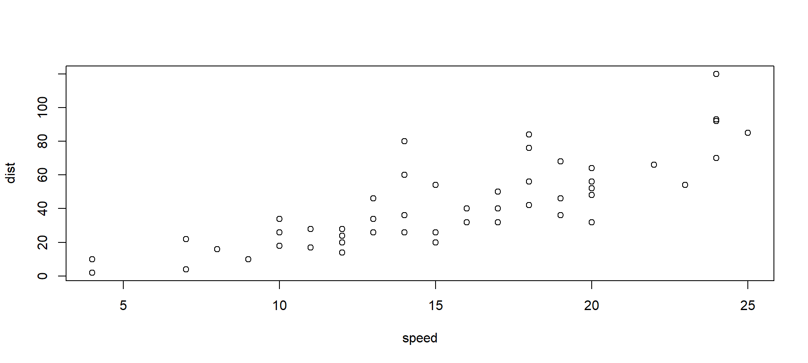
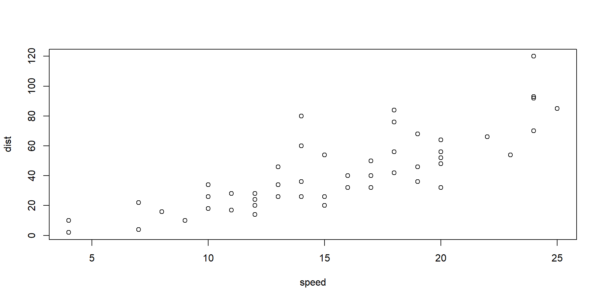
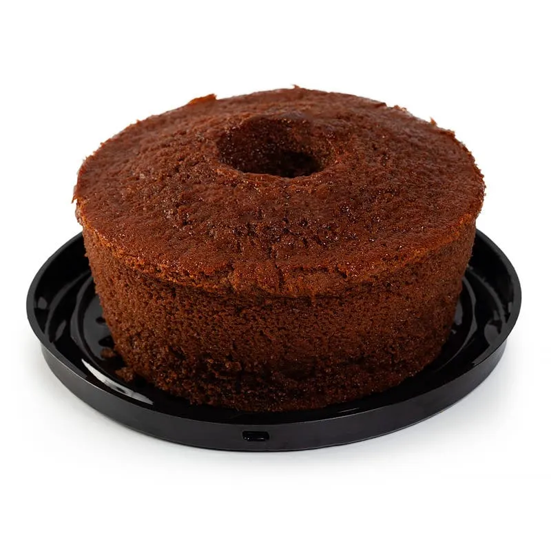
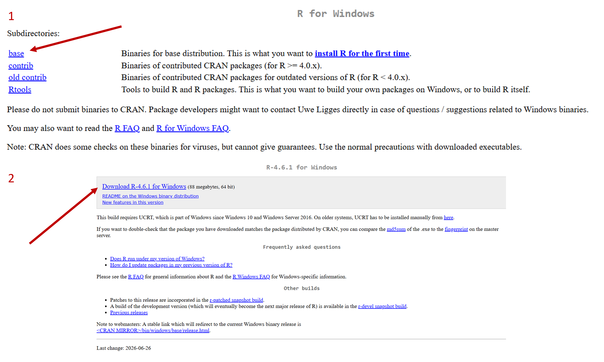
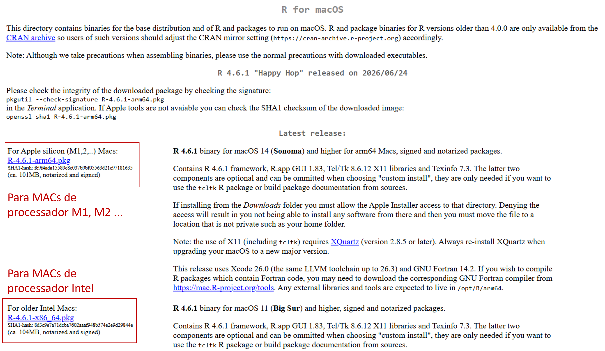
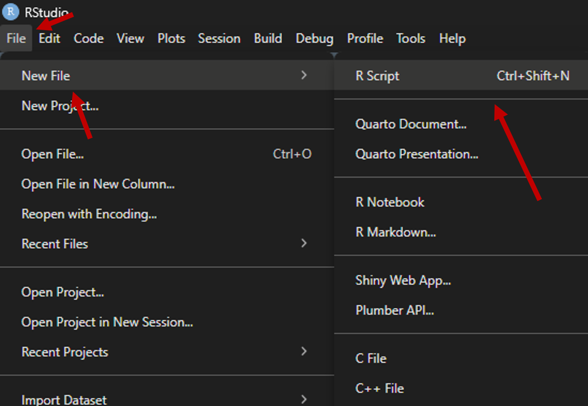

Capa
MINICURSO
Análises geográficas a partir de bases públicas de dados: fundamentos e fontes teóricas
OFICINA
Introdução ao uso da linguagem de programação R para tratamento de grandes bases de dados georreferenciadas
Apresentação
Clara Penz
Geógrafa, mestranda em Geografia Humana pela USP; atua com metodologias quantitativas para mapeamento e análise de políticas públicas. Participa do projeto “Redes técnicas e digitalização do território nas favelas”, desenvolvido pelo CEFAVELA (UFABC); atualmente é estagiária no Instituto de Estudos Brasileiros (USP) no acervo do Milton Santos.
João Victor Pavesi de Oliveira
Geógrafo, com mestrado e doutorado em Geografia Humana pela USP; estuda políticas educacionais, direito à cidade e geografia da educação. Participante da Rede Escola Pública e Universidade (REPU); atualmente professor substituto no IFBA-Salvador.
MINICURSO
MINICURSO
Análises geográficas a partir de bases públicas de dados: fundamentos e fontes teóricas
Bullets
When you click the Render button a document will be generated that includes:
- Content authored with markdown
- Output from executable code
Line Highlighting
- Highlight specific lines for emphasis
- Incrementally highlight additional lines
Learn more: Line Highlighting
Executable Code
Learn more: Executable Code
LaTeX Equations
MathJax rendering of equations to HTML
\[\begin{gather*} a_1=b_1+c_1\\ a_2=b_2+c_2-d_2+e_2 \end{gather*}\] \[\begin{align} a_{11}& =b_{11}& a_{12}& =b_{12}\\ a_{21}& =b_{21}& a_{22}& =b_{22}+c_{22} \end{align}\]
Learn more: LaTeX Equations
Column Layout
Arrange content into columns of varying widths:
Motor Trend Car Road Tests
The data was extracted from the 1974 Motor Trend US magazine, and comprises fuel consumption and 10 aspects of automobile design and performance for 32 automobiles.

OFICINA
OFICINA
Introdução ao uso da linguagem de programação R para tratamento de grandes bases de dados georreferenciadas
Objetivos
Compreender o que é uma linguagem de programação
Reconhecer os diferentes painéis do R
Conhecer as principais funções para trabalhar com tabelas
- Importação
- Visualização
- Estatística básica
- Filtro
- União
- Exportação
E, principalmente…
perder o medo de programar!
O que é uma linguagem de programação?
Algoritmo
Sequência lógica de passos para realizar uma tarefa computacional
Linguagem de programação
Conjunto formal de símbolos e regras utilizado para criar algoritmos
Metáfora da receita de bolo
- Ovos fresquinhos
- Pitada de sal
- Açúcar a gosto (mas não exagerar!)
- Farinha soltinha
- Qualquer óleo vegetal
- Forno já quente
- Assar até a casa cheirar a bolo
- Pré-aqueça o forno a 180°C
- Bata 3 ovos com 200 g de açúcar por 3 minutos
- Adicione 100 ml de óleo vegetal e bata por mais 1 minuto
- Incorpore 250 g de farinha de trigo e 10 g de fermento em pó, mexendo por 30 segundos
- Despeje em forma untada de 20 cm e leve ao forno por 35 minutos
- Retire quando um palito inserido no centro sair limpo
Metáfora da receita de bolo
- Algoritmo: receita em si, sequência de passos (misturar, acrescentar, assar)
- Linguagem de programação: o idioma e a linguagem de comunicação da receita
Lembrando que o computador é um objeto literal!

Por que escolher R?
“In the process, I hope to show that, despite its sometimes frustrating quirks, R is, at its heart, an elegant and beautiful language, well tailored for data science.”
- Hadley Wickham, Advanced R, seção “Why R?”
- Linguagem gratuita e de código aberto
- Criada especificamente para estatística e análise de dados
- Grande comunidade ativa (tidyverse, CRAN, fóruns)
- Exige menos capacidade computacional que softwares pagos
Instalação do R
Acesse o site da CRAN e faça download conforme o sistema operacional do seu computador, seguindo as especificações dos próximos slides
Windows

Após o download, instalar normalmente clicando no arquivo baixado. Manter as especificações da instalação conforme o padrão.
Mac

Assim como no Windows, instalar normalmente clicando no arquivo baixado. Manter as especificações da instalação conforme o padrão.
Linux
O Sistema Linux pode variar conforme a especificação (Ubuntu, Debian…)
- Vídeo-tutorial para instalação no Ubuntu:
Instalar RStudio
Acessar o site da Posit
Fazer Download conforme sistema operacional desejado
Instalar normalmente, seguindo as configurações padrão de instalação
Painéis do RStudio

1. Script (Source)
canto superior esquerdo
2. Console
canto inferior esquerdo
3. Environment
canto superior direito
4. Files / Plots / Packages / Help
canto inferior direito
Tipos de arquivo
Dados tabulares mais comuns
.csv- valores separados por vírgula.txt- texto delimitado (tab,;).xlsx- planilhas Excel
Dados espaciais mais comuns
.shp- shapefile (ESRI).gpkg- GeoPackage
Tabelas, variáveis e classes
Uma tabela (data frame) organiza os dados em linhas e colunas.
Cada coluna é uma variável.
Cada variável tem uma classe (tipo de valor que ela armazena)
Principais classes
character- textointeger/numeric- númeroslogical-TRUEouFALSEfactor- categorias
Exemplo: month.name e airquality, dados prontos do R
[1] "January" "February" "March" "April" "May" "June"
[7] "July" "August" "September" "October" "November" "December" Ozone Solar.R Wind Temp Month Day
1 41 190 7.4 67 5 1
2 36 118 8.0 72 5 2
3 12 149 12.6 74 5 3
4 18 313 11.5 62 5 4
5 NA NA 14.3 56 5 5
6 28 NA 14.9 66 5 6Arquivos que vamos usar
Organização de pastas
(…) os conjuntos de dados organizados são todos parecidos, mas cada conjunto de dados bagunçado é bagunçado à sua própria maneira.”
- Hadley Wickham, Tidy Data (2014)
projeto-alfabetizacao-ba/
├── processar_dados.R
├── 1-inputs/
│ ├── dicionario_de_dados_agregados_por_setores_censitarios_20260520.xlsx
│ ├── BA_setores_CD2022.gpkg
│ └── Agregados_por_setores_alfabetizacao_BR.csv
└── 2-outputs/inputs/- dados brutos, nunca editados manualmenteoutputs/- resultados ou dados editados- arquivo
.R- script
Criar um script

No menu superior, vá em File → New File → R Script (atalho:
Ctrl+Shift+Nno Windows/Linux ouCmd+Shift+Nno Mac)Escreva seu código no novo painel que abrir (o Script/Source, no canto superior esquerdo)
Salve com
Ctrl+S(ouCmd+S), escolha a pasta do projeto e dê um nome terminado em.R(ex:analise.R)
Pacotes em R
Um pacote é um conjunto de funções, dados e documentação que estende as capacidades do R base Instalar: install.packages() (uma vez) Carregar: library() (a cada sessão) :::::: columns ::: {.column width=“48%”} Manipulação de dados - dplyr - filtrar, agrupar, unir - tidyr - organizar dados e tratar valores ausentes (NA) - readxl - importar e exportar dados em planilhas de excel - stringr - editar e manipular dados textuais
Dados espaciais - sf - dados vetoriais georreferenciados - ggplot2 - visualização de dados em geral e espaciais
::::::
:::::::
Definindo objetos
Utilizando o operador pipe
O pipe (|> ou %>%) lê o valor que está à esquerda e aplica as funções da direita a tal valor de referência
Sem o pipe, as funções ficam alinhadas de dentro para fora (similar ao excel)
Com o pipe, as funções ficam em etapas
[1] 6.67[1] 6.67Nos dois casos, o resultado é o mesmo, mas o segundo modo é mais intuitivo
Importação
Reading layer `BA_setores_CD2022' from data source
`D:\oficinas_dadas\geodados-mais-r\1-inputs\BA_setores_CD2022.gpkg'
using driver `GPKG'
Simple feature collection with 31070 features and 36 fields
Geometry type: POLYGON
Dimension: XY
Bounding box: xmin: -46.57728 ymin: -18.34856 xmax: -37.34115 ymax: -8.532821
Geodetic CRS: SIRGAS 2000st_read()- função do pacotesfpara ler arquivos espaciaisread.delim()- função doR basepara ler arquivos de texto delimitadosep = ";"- parâmetro para colunas do CSV separadas por ponto e vírgula (padrão usado pelo nesse caso)
Visualização
Checagem básica de estrutura dos dados
No dicionário do IBGE, três colunas serão nosso foco:
CD_setor- código único de cada setor censitárioV00900- pessoas de 15 anos ou mais que sabem ler e escreverV00901- pessoas de 15 anos ou mais que não sabem ler e escrever
Filtro
O CSV do IBGE vem para o Brasil todo - manter apenas os setores da Bahia
⚠️ Atenção especial ao CD_setor: precisa ser lido como texto (character), nunca como número!
alfabetizacao <- alfabetizacao |>
mutate(CD_setor = as.character(CD_setor))
# filtrar a coluna CD_setor para os registros que começam com 29 - código estadual da Bahia
alfabetizacao_ba <- alfabetizacao |>
filter(str_starts(CD_setor, "29"))
# remover planilha de Brasil inteiro (liberar memória)
rm(alfabetizacao)Notas:
- função
str_starts()do pacote stringr lê o(s) primeiro(s) caractere(s) de um texto - função
mutate()cria uma nova variável
Estatística básica
Calcular para cada setor: - Total de pessoas de 15 anos ou mais (soma entre saber e não saber ler e escrever) - V00900 + V00901
- Percentual de analfabetismo
- V00901 / (V00900 + V00901) * 100
Existem caracteres “X” na planilha. Forçar para transformar em numérico com função as.numeric()
alfabetizacao_ba <- alfabetizacao_ba |>
mutate(
V00900 = as.numeric(V00900),
V00901 = as.numeric(V00901),
V00900 = replace_na(V00900, 0),
V00901 = replace_na(V00901, 0)
)
alfabetizacao_ba <- alfabetizacao_ba |>
mutate(
total_15mais = V00900 + V00901,
nao_alfab = V00901,
pct_nao_analfab = (V00901 / total_15mais) * 100
) |>
select(CD_setor, total_15mais, nao_alfab, pct_nao_analfab)
summary(alfabetizacao_ba$pct_nao_analfab) Min. 1st Qu. Median Mean 3rd Qu. Max. NA's
0.000 5.406 13.083 14.821 22.472 75.000 225 Notas:
função
select()seleciona variáveis desejadasfunção
summary()indica estatítisticas básicas para uma variável
Checagem da tabela de malha
[1] "CD_SETOR" "SITUACAO" "CD_SIT" "CD_TIPO" "AREA_KM2"
[6] "CD_REGIAO" "NM_REGIAO" "CD_UF" "NM_UF" "CD_MUN"
[11] "NM_MUN" "CD_DIST" "NM_DIST" "CD_SUBDIST" "NM_SUBDIST"
[16] "CD_BAIRRO" "NM_BAIRRO" "CD_NU" "NM_NU" "CD_FCU"
[21] "NM_FCU" "CD_AGLOM" "NM_AGLOM" "CD_RGINT" "NM_RGINT"
[26] "CD_RGI" "NM_RGI" "CD_CONCURB" "NM_CONCURB" "v0001"
[31] "v0002" "v0003" "v0004" "v0005" "v0006"
[36] "v0007" "geom" União
Para unir tabelas, é necessário ter uma variável comum entre elas
A variável comum deve ser da mesma classe em ambas as tabelas!
Nota: a função left_join() une duas tabelas mantendo todos os registros da tabela à esquerda
Mapa
OFICINA
PACOTES geobr e censobr
Apresentação do uso simplificado de dados do censo
Bibliografia recomendada
R para Ciência de Dados (2ª edição)
Referências e agradecimentos
Agradecemos à Associação Brasileira de Geógrafos e Geógrafas do Brasil e à organização do Encontro Nacional de Geografia de 2026 pelo espaço e apoio para a realização do minicurso e da oficina.
Referências
VARTANIAN, Daniel. r-course: an introduction to the R programming language. São Paulo: Centro de Estudos da Metrópole, Universidade de São Paulo, 2026. Disponível em: https://github.com/danielvartan/r-course. Acesso em: jul. 2026.
UTRECHT UNIVERSITY. uu-quarto-presentation-template: template repository for creating a UU styled Quarto presentation. Utrecht: Utrecht University, [20–]. Disponível em: https://github.com/UtrechtUniversity/uu-quarto-presentation-template. Acesso em: jul. 2026.
WICKHAM, Hadley; ÇETINKAYA-RUNDEL, Mine; GROLEMUND, Garrett. R for Data Science: import, tidy, transform, visualize, and model data. 2. ed. Sebastopol: O’Reilly Media, 2023. Disponível em: https://r4ds.hadley.nz/. Acesso em: jul. 2026.
WICKHAM, Hadley. Advanced R. 2. ed. Boca Raton: CRC Press, 2019. Disponível em: https://adv-r.hadley.nz/. Acesso em: jul. 2026.
WICKHAM, Hadley. Tidy data. Journal of Statistical Software, v. 59, n. 10, p. 1-23, 2014. Disponível em: https://www.jstatsoft.org/v59/i10/. Acesso em: jul. 2026.
Agradecemos a atenção!
Geografia, Dados Públicos e R